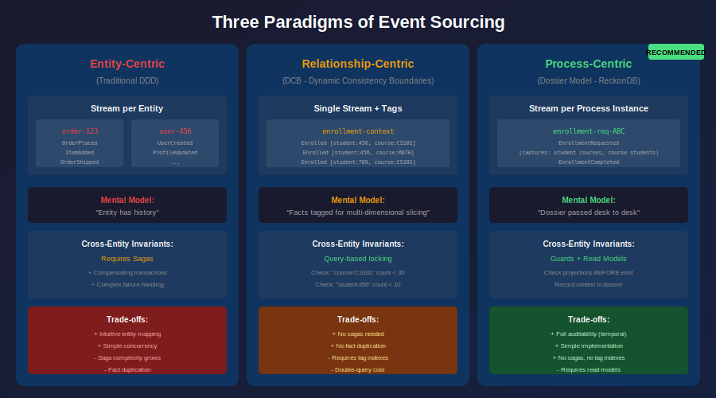
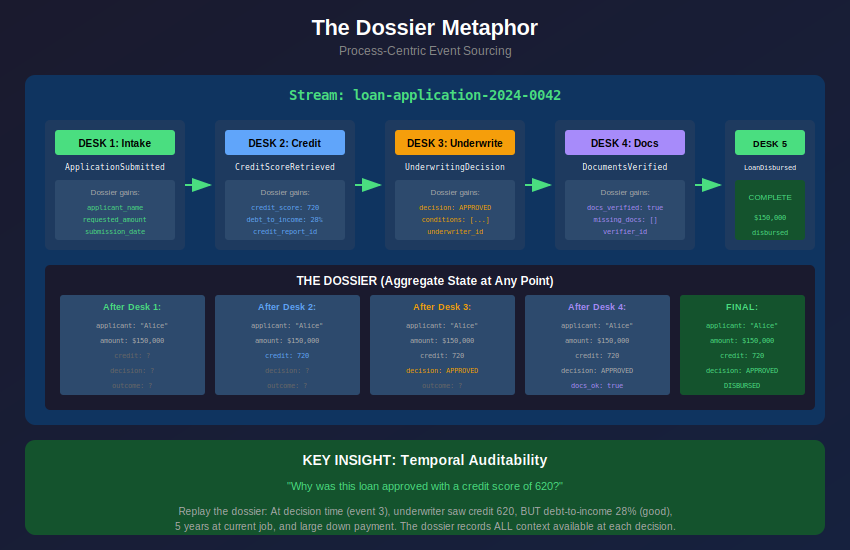

Event Sourcing Paradigms: Entity, Relationship, and Process-Centric
View SourceThis guide explores three distinct approaches to event sourcing, each with different mental models, trade-offs, and use cases. Understanding these paradigms helps you choose the right approach for your domain.

The Three Paradigms
| Aspect | Entity-Centric | Relationship-Centric (DCB) | Process-Centric |
|---|---|---|---|
| Stream identity | Entity ID | Context name | Process instance ID |
| What stream represents | Entity's complete history | All facts in a bounded context | Business process execution log |
| Aggregate purpose | Entity state reconstruction | Ad-hoc decision model (query-time) | Process context ("dossier") |
| Concurrency unit | Single entity's stream | Query-based tag intersection | Single process instance |
| Cross-cutting concerns | Sagas, process managers | Tags + query-based locking | Process flow owns all participants |
| Mental model | "Entity has history" | "Facts are tagged for slicing" | "Dossier passed desk to desk" |
Entity-Centric Paradigm (Traditional DDD)
The most common approach, derived from Domain-Driven Design. Each entity (aggregate) owns a dedicated event stream.
Mental Model
"Every entity has a history. The entity IS its history."
Stream: order-123
├── OrderPlaced
├── ItemAdded
├── PaymentReceived
├── OrderShipped
└── OrderDelivered
Stream: user-456
├── UserRegistered
├── ProfileUpdated
├── PasswordChanged
└── AccountVerifiedCharacteristics
Strengths:
- Intuitive mapping to domain objects
- Clear ownership: one stream per aggregate
- Well-understood patterns (DDD literature)
- Simple optimistic concurrency (stream version)
Weaknesses:
- Cross-entity invariants require sagas
- Fact duplication when entities interact
- Saga complexity grows with domain complexity
- Compensating transactions for failure handling
Example: Course Enrollment (Entity-Centric)
%% Two streams, fact duplicated
%% Stream: course-CS101
%% ├── CourseCreated
%% └── StudentEnrolled {student_id: 456} ← FACT 1
%%
%% Stream: student-456
%% ├── StudentCreated
%% └── CourseJoined {course_id: CS101} ← SAME FACT, DUPLICATED
%% Saga required to coordinate:
%% 1. Check student course count < 10
%% 2. Check course student count < 30
%% 3. Append to course stream
%% 4. Append to student stream
%% 5. If step 4 fails, compensate step 3When to Use
- Domains where entities are truly independent
- Simple CRUD-like operations
- Well-bounded aggregates with few cross-entity invariants
Relationship-Centric Paradigm (Dynamic Consistency Boundaries)
Introduced by Sara Pellegrini in her "Killing the Aggregate" thesis. Events are tagged with multiple entities, enabling multi-dimensional querying.
Mental Model
"Events are facts about relationships, not entities. Facts can be sliced by any participating entity."
Stream: enrollment-context (single stream for all enrollments)
├── Enrolled {student: 456, course: CS101, tags: [student:456, course:CS101]}
├── Enrolled {student: 456, course: MATH201, tags: [student:456, course:MATH201]}
├── Enrolled {student: 789, course: CS101, tags: [student:789, course:CS101]}
└── ...
Query by tags:
- "course:CS101" → 2 enrollments
- "student:456" → 2 enrollmentsCharacteristics
Strengths:
- No fact duplication
- No sagas for cross-entity invariants
- Query-time flexibility
- Single source of truth for relationships
Weaknesses:
- Requires tag indexing infrastructure
- Double-query cost (decision + precondition check)
- Query-time aggregation loses temporal context
- Mental model shift from traditional DDD
Example: Course Enrollment (DCB)
%% Single stream with tags
Event = #{
event_type => enrollment_requested,
data => #{student_id => 456, course_id => <<"CS101">>},
tags => [<<"student:456">>, <<"course:CS101">>]
},
%% Query-based concurrency check:
%% 1. Query events matching "course:CS101" → get count + last position
%% 2. Query events matching "student:456" → get count + last position
%% 3. Append with precondition: no new events matching either query since position
Query = {and, [{tags, [<<"course:CS101">>]}, {tags, [<<"student:456">>]}]},
reckon_db:append(<<"enrollments">>, [Event], {query, Query, LastPosition}).When to Use
- Domains dominated by relationships between entities
- Cross-entity invariants are common
- Analytical/reporting needs require multi-dimensional slicing
- Willing to invest in tag indexing infrastructure
References
- DCB.events - Official documentation
- Sara Pellegrini's Event Thinking
- Axon Framework 5 DCB Support
- EventSourcingDB DCB Best Practices
Process-Centric Paradigm (The Dossier Model)
ReckonDB's recommended approach. An event stream represents a business process instance, not an entity. The aggregate is the accumulated context - like a dossier passed from desk to desk.
Mental Model
"An event stream is an ordered log of facts that represent a business process. The aggregate is the 'dossier' - accumulated context passed from desk to desk, gradually filling with facts."

The Dossier Metaphor
Imagine a loan application process in a traditional office:
┌─────────────────────────────────────────────────────────────────┐
│ THE DOSSIER - Physical folder passed between desks │
├─────────────────────────────────────────────────────────────────┤
│ │
│ DESK 1 (Intake): │
│ └─ Application form received │
│ └─ Dossier starts: applicant name, requested amount │
│ │
│ DESK 2 (Credit Check): │
│ └─ Credit report pulled │
│ └─ Dossier gains: credit score, debt-to-income ratio │
│ │
│ DESK 3 (Underwriting): │
│ └─ Risk assessment completed │
│ └─ Dossier gains: approval decision, conditions, notes │
│ │
│ DESK 4 (Documentation): │
│ └─ Documents verified │
│ └─ Dossier gains: verification checklist, issues found │
│ │
│ DESK 5 (Closing): │
│ └─ Loan disbursed │
│ └─ Dossier complete: final terms, disbursement details │
│ │
└─────────────────────────────────────────────────────────────────┘
The PROCESS owns the stream.
The applicant, the loan, the credit bureau - all are PARTICIPANTS.Characteristics
Strengths:
- Complete auditability: dossier records WHAT WE KNEW at each decision
- Single stream per process instance (no coordination)
- Invariants checked as process guards using read models
- Natural fit for workflow-heavy domains
- "Why did we approve this?" → replay the dossier
Weaknesses:
- Requires read models for cross-process queries
- Less intuitive for pure entity-focused domains
- May need to denormalize entity state across processes
Example: Course Enrollment (Process-Centric)
%% Process: EnrollmentRequest
%% Stream: enrollment-request-{uuid}
-record(enrollment_dossier, {
request_id,
student_id,
course_id,
%% Context captured at decision time
student_courses_at_request = [],
course_students_at_request = [],
%% Process outcome
validation_status,
outcome,
outcome_reason
}).
%% Command handler: check invariants as process GUARDS
handle_command(#request_enrollment{student_id = S, course_id = C}, _State) ->
%% Fetch current state from READ MODELS (projections)
StudentCourses = enrollments_projection:courses_for_student(S),
CourseStudents = enrollments_projection:students_for_course(C),
%% Guard: check both invariants BEFORE emitting events
case {length(StudentCourses) < 10, length(CourseStudents) < 30} of
{true, true} ->
%% Dossier records what we knew at decision time
[#enrollment_requested{
student_id = S,
course_id = C,
student_courses_at_request = StudentCourses,
course_students_at_request = CourseStudents
}];
{false, _} ->
[#enrollment_rejected{
student_id = S,
course_id = C,
reason = student_course_limit_reached,
student_course_count = length(StudentCourses)
}];
{_, false} ->
[#enrollment_rejected{
student_id = S,
course_id = C,
reason = course_capacity_reached,
course_student_count = length(CourseStudents)
}]
end.
%% Apply events to build dossier state
apply_event(#enrollment_requested{} = E, Dossier) ->
Dossier#enrollment_dossier{
student_id = E#enrollment_requested.student_id,
course_id = E#enrollment_requested.course_id,
student_courses_at_request = E#enrollment_requested.student_courses_at_request,
course_students_at_request = E#enrollment_requested.course_students_at_request,
validation_status = valid
};
apply_event(#enrollment_completed{}, Dossier) ->
Dossier#enrollment_dossier{outcome = completed};
apply_event(#enrollment_rejected{reason = R}, Dossier) ->
Dossier#enrollment_dossier{
outcome = rejected,
outcome_reason = R
}.The Key Insight: Temporal Context
The process-centric model captures temporal context that query-time aggregation cannot:
AUDITOR: "Why was this loan approved despite the applicant's low credit score?"
ENTITY-CENTRIC: "The aggregate says approved. Check the saga logs... somewhere."
DCB: "Query the events... but we only know the final state, not what
the underwriter saw at decision time."
PROCESS-CENTRIC: "Replay the dossier. At decision time (event 3),
the underwriter saw: credit score 620, but debt-to-income
was 28% (good), and applicant had 5 years at current job.
The dossier records all context that was available."When to Use
- Workflow-heavy domains (loan processing, insurance claims, order fulfillment)
- Regulatory/compliance requirements for decision auditability
- Processes with multiple participants that must be coordinated
- Long-running processes with multiple decision points
Paradigm Comparison: The Enrollment Problem
All three paradigms can solve the same problem. Here's how they compare:
| Paradigm | Solution | Code Complexity | Runtime Complexity | Auditability |
|---|---|---|---|---|
| Entity-Centric | Two streams + saga | High (saga logic, compensation) | Medium (saga orchestration) | Medium |
| DCB | Tags + query-based locking | Medium (tag indexing) | Higher (double queries) | Low (query-time) |
| Process-Centric | Process stream + read model guards | Low (simple guards) | Low (single stream writes) | High (temporal) |
Complexity Analysis
Entity-Centric:
┌─────────────────────────────────────────────────────────────┐
│ Components needed: │
│ - Course aggregate │
│ - Student aggregate │
│ - EnrollmentSaga (coordinates both) │
│ - CompensationHandler (rollback on failure) │
│ - 2 streams, 4 event types, saga state machine │
└─────────────────────────────────────────────────────────────┘
DCB:
┌─────────────────────────────────────────────────────────────┐
│ Components needed: │
│ - Tag index (new infrastructure) │
│ - Query-based concurrency (new append mode) │
│ - Decision model builder │
│ - 1 stream, 1 event type, 2 queries per write │
└─────────────────────────────────────────────────────────────┘
Process-Centric:
┌─────────────────────────────────────────────────────────────┐
│ Components needed: │
│ - EnrollmentRequest process (aggregate) │
│ - EnrollmentsProjection (read model) │
│ - 1 stream per request, 2-3 event types, simple guards │
└─────────────────────────────────────────────────────────────┘Choosing the Right Paradigm
Decision Framework
START
│
▼
┌─────────────────────────────────────────┐
│ Is your domain workflow-heavy? │
│ (loan processing, claims, fulfillment) │
└─────────────────────────────────────────┘
│ │
YES NO
│ │
▼ ▼
┌─────────────────┐ ┌─────────────────────────────────┐
│ PROCESS-CENTRIC │ │ Do you have many cross-entity │
│ (Dossier Model) │ │ invariants? │
└─────────────────┘ └─────────────────────────────────┘
│ │
YES NO
│ │
▼ ▼
┌─────────────────────┐ ┌─────────────────┐
│ Can you invest in │ │ ENTITY-CENTRIC │
│ tag infrastructure? │ │ (Traditional) │
└─────────────────────┘ └─────────────────┘
│ │
YES NO
│ │
▼ ▼
┌───────────┐ ┌─────────────────┐
│ DCB │ │ PROCESS-CENTRIC │
└───────────┘ │ (simpler) │
└─────────────────┘Hybrid Approaches
Real systems often use multiple paradigms:
%% Master data: Entity-centric
%% Stream: product-SKU123 (catalog item, rarely changes)
%% Stream: customer-C456 (profile data)
%% Transactional processes: Process-centric
%% Stream: order-process-ORD789 (order fulfillment)
%% Stream: return-request-RET012 (return processing)
%% Analytics: Tag-based queries (without DCB concurrency)
%% Query by tags for reporting, not for consistencyReckonDB's Position
ReckonDB recommends the process-centric paradigm for most event-sourced systems because:
- Better auditability - The dossier captures decision context
- Simpler implementation - No sagas, no tag indexes for concurrency
- Natural fit - Most business operations are processes, not entity mutations
However, ReckonDB supports tags for query purposes:
%% Tags for analytics, NOT for concurrency control
Event = #{
event_type => enrollment_completed,
data => #{
process_id => <<"enrollment-req-123">>,
student_id => 456,
course_id => <<"CS101">>
},
tags => [<<"student:456">>, <<"course:CS101">>] %% For queries only
},
%% Concurrency remains stream-version-based
{ok, V} = reckon_db:append(<<"enrollment-req-123">>, [Event], ExpectedVersion).
%% But you can query across processes by tags
{ok, AllStudentEnrollments} = reckon_db:read_by_tags([<<"student:456">>], #{}).Further Reading
- Event Sourcing Guide - Core event sourcing concepts
- CQRS Guide - Command Query Responsibility Segregation
- Subscriptions Guide - Real-time event notifications
- Snapshots Guide - Optimizing aggregate loading
References
Process-Centric / Dossier Model
- ReckonDB documentation and this guide
Dynamic Consistency Boundaries (DCB)
- DCB.events - Official DCB documentation
- Sara Pellegrini's Event Thinking - "Killing the Aggregate" thesis
- Kill Aggregate? Interview - Bastian Waidelich, EventSourcingDB
- DCB in Axon Framework 5 - First major framework support
- Axon Server 2025.1 - Event store with DCB
Entity-Centric (Traditional)
- Martin Fowler: Event Sourcing
- Greg Young: CQRS and Event Sourcing
- Vaughn Vernon: "Implementing Domain-Driven Design"
Academic
- Abadi: "Consistency Tradeoffs in Modern Distributed Database System Design"
- Helland & Campbell: "Building on Quicksand"